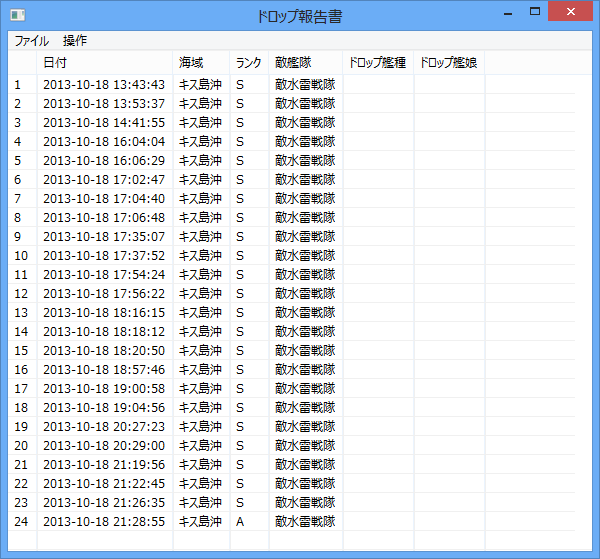
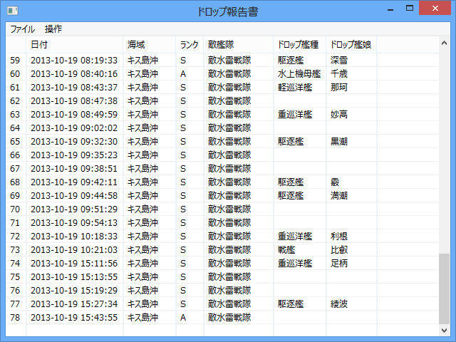
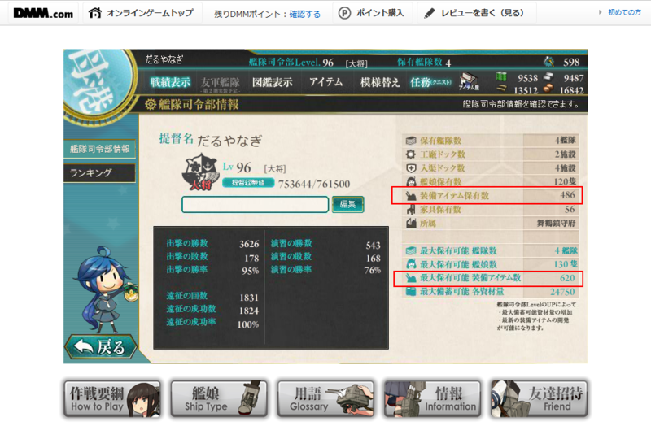
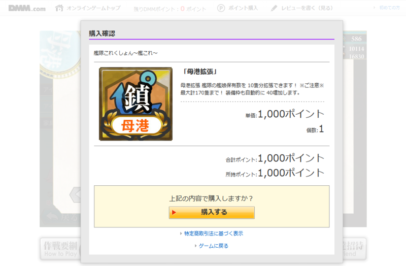

艦これ: 提督レベル96になるまで知らなかったこと。
公開日：

まずはこれを見てくれ。どう思う？ 金曜日の昼間から艦これやってんじゃねーよ、とか、そういうツッコミを期待しているのではない。それは見なかったことにしてくれ。それよりもドロップ欄を見てくれ。24戦してドロップゼロとか、異常過ぎる。運に見放されるにしても、程度があろうかと思う。実はこれ、26戦までやったけどノードロップだったのだ。
何でこんなにドロップないんだ（
艦娘保有枠のオーバーフロー？
@daruyanagi MAXなのでは…
@Kaikias_lys 113/120 だった
2013-10-18 21:33:49 via MetroTwit to @Kaikias_lys
艦娘保有枠があふれていたら、そもそも出撃ができないので気づくはず。
もしかして
@daruyanagi 装備の所持限界ではないですか？
2013-10-18 21:38:10 via Amelloides to @daruyanagi
@kinokonabe 艦娘は 113/120 だった。装備は……577らしい。天井ではなさそう？
2013-10-18 21:38:48 via MetroTwit to @kinokonabe
一応 MAX ではないのだけど、余裕がないのは確かなので装備を整理してみた。すると――

@kinokonabe でました；； ありがとー
2013-10-18 21:46:57 via MetroTwit to @kinokonabe
これが原因だったらしい。まったく気付かなかった。

ちなみにアイテム保有数があふれているかどうかは、ランキング画面から確認できる。

二度とこんなことは御免なので、課金しておいた。